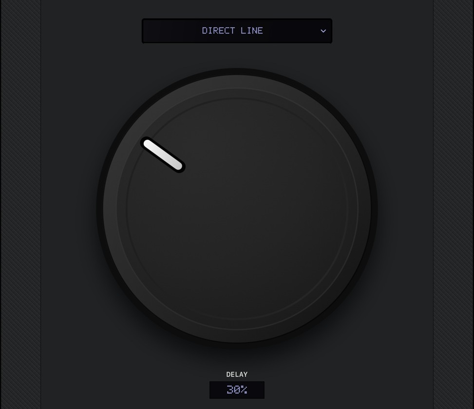
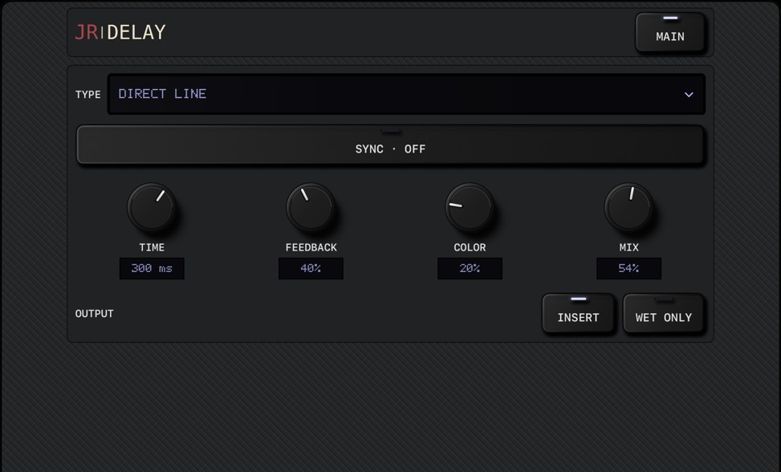

Classic
Direct Line · Pocket Relay
Keep an even repeat or put a short slap just behind the source.
RHYTHMIC & VINTAGE DELAY/ iPhone · iPad · AUv3
Start with a clean tap, add the movement of tape or bucket-brigade circuits, or send repeats across the stereo field. Set the time by ear or lock it to your session.
APP STORE LAUNCH IN PREPARATION

SOUND DEMO
Notice how the tape-colored repeats soften and move as the phrase falls away. Both clips use the same keys phrase and input level.
EFFECT TYPES
Choose a delay by what the repeats should do in the groove, from one quick reply to a moving stereo tail.
Direct Line · Pocket Relay
Keep an even repeat or put a short slap just behind the source.
Rust Loop · Amber Circuit
Add tape-style motion or the softer, darker repeat of a bucket-brigade path.
Night Bus · Split Grid · Undervoice
Move taps across stereo, add a second tap or let the repeats rise in the spaces between phrases.
EDIT / FOUR CONTROLS

Tap or hold the active type name to browse groups, or drag it to step through types. Each type recalls its edit settings, and MIX keeps its current value as you change types.
STANDALONE / AUv3
Open the app and audition the effect on DRUMS or KEYS. Start with the main dial, then open EDIT to refine it.
Find Jazzy Rhythmer: JR DELAY under audio effects in an AUv3 host. Use Wet Only on an aux send, or Insert for repeats alongside the dry source. With SYNC on, choose from 1/32 through 1/2, including triplet and dotted divisions.